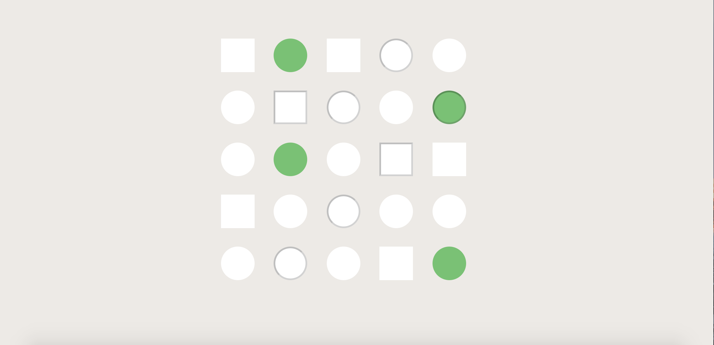
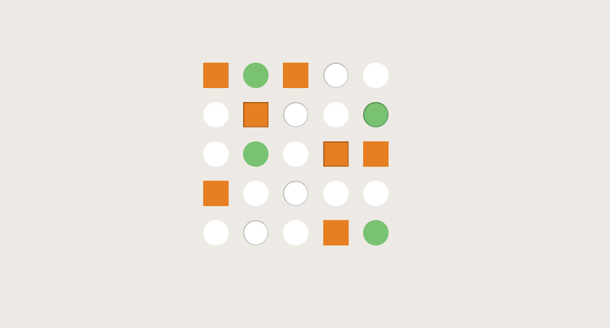
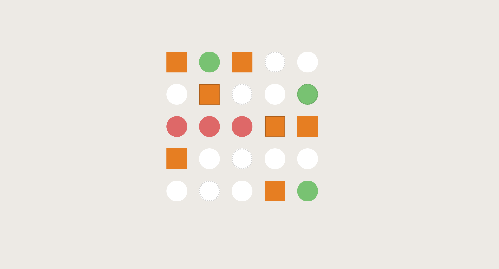
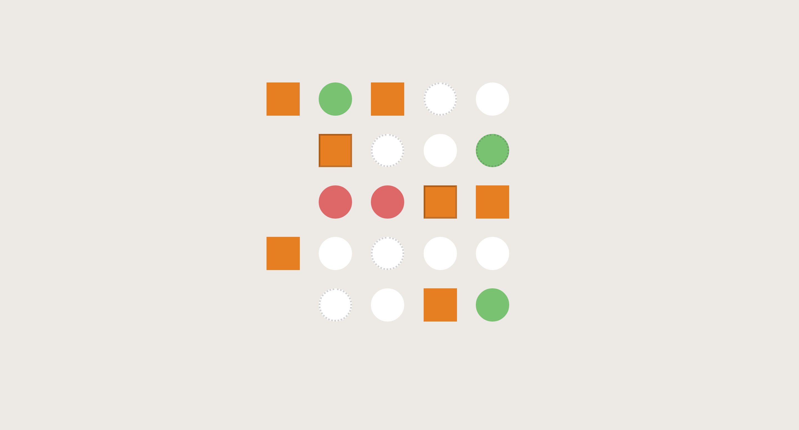
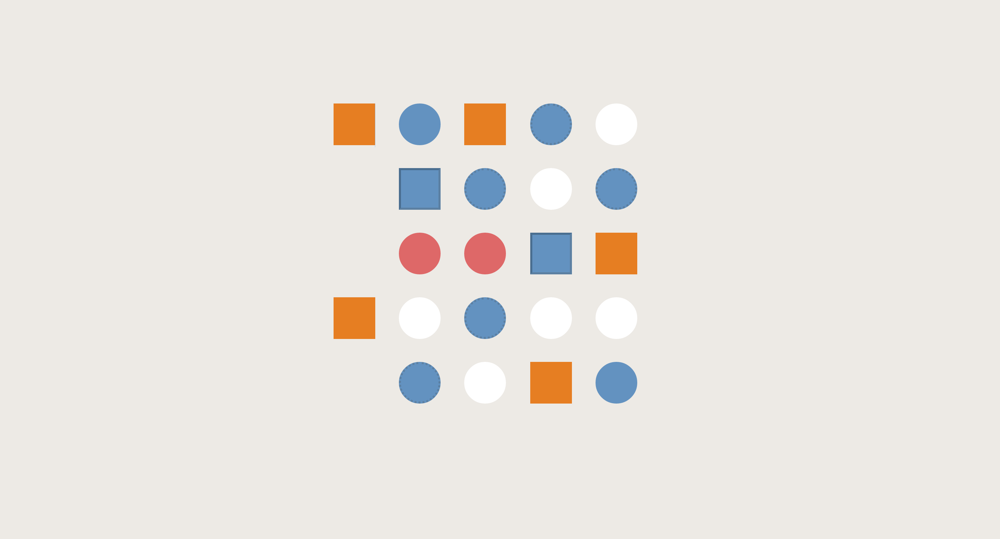
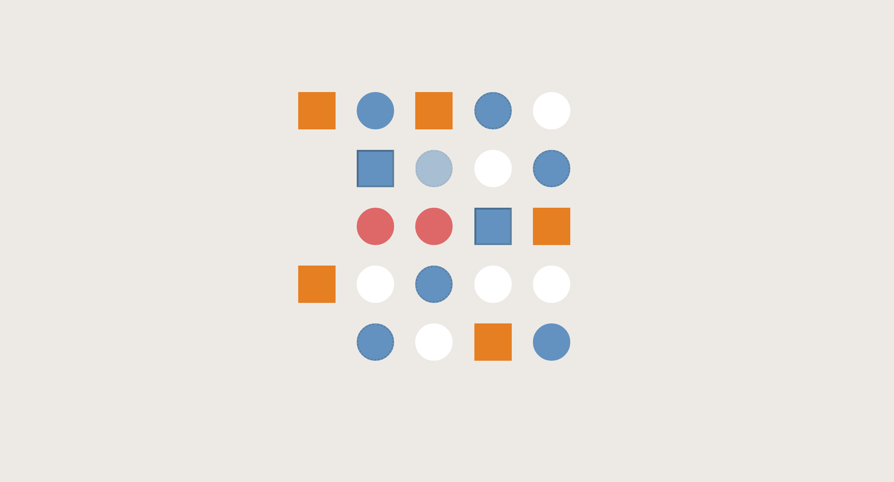
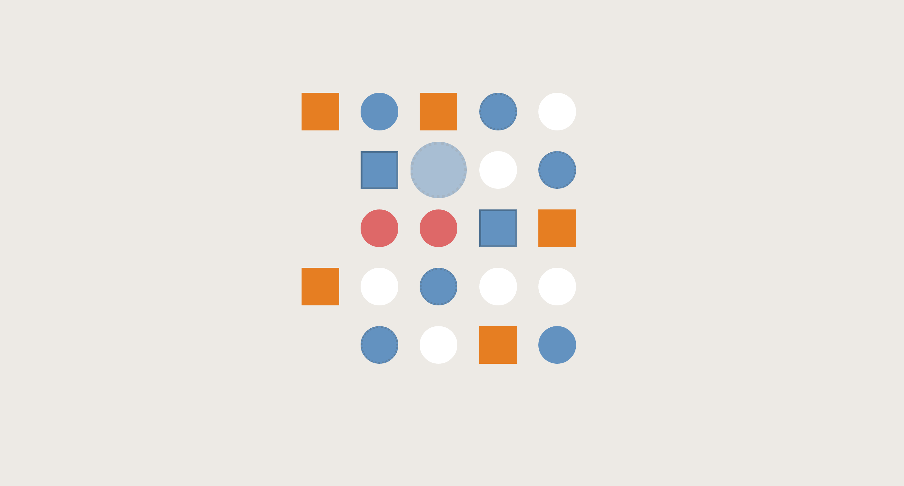

For this assignment, we have already provided you all the code to start with, so you don't have to create any extra files. If you're interested in extra practice and exploring more CSS selectors on your own, feel free to check out this link or google to your hearts content!
You can download the assignment file here:
In the assignment folder, you can find style.css inside assets/css/ folder. You can only make changes to this file. You are not allowed to change anything in index.html (except for problem 0, in the head tag, and the design section responses). This assignment is to have you practice using CSS selectors to select any element on your website, without making any edits in your HTML. We will take off points for making changes to the HTML file.
Part 1: Selectors
In part one of this assignment, you will select various shapes and apply some CSS styles to only those shapes that you have selected. We will give you all the CSS styles you need, all you need to do is to just select the right shapes. (Sounds easy, huh?) In fact, we are giving away all the good colors too so you don't have to stick to the ugly default red, blue, or green. Many shapes. Much colors. Such fun.
-
Problem 1: Link the style.css file in the index.html.
This is how the index.html knows where to look to style the elements. Hint: check out slide 8 in this week's presentation!
This step is a must when adding CSS styling to your website! After completing this step, your page should look like this:
 -
Problem 2: Select all squares and make their background orange.
To change the background color, use background: #e67e22
After completing this step, your page should look like this:
 -
Problem 3: Select all circles in the third row and make them red.
To change the background color, use background: #de6868
After completing this step, your page should look like this:
-
Problem 4: Select all fancy circles and make their borders dotted.
To change the border to dotted, use border-style: dotted
After completing this step, your page should look like this:
 -
Problem 5: Select all circles in the first column and make them disappear.
NOTE: We didn't cover this in lecture, but take a look at this website for help!
To make them disappear, use opacity: 0
After completing this step, your page should look like this:
 -
Problem 6: Select all shapes that are either green, fancy, or both and make them blue.
To change the background, use background: #6392c0
After completing this step, your page should look like this:
 -
Problem 7: Select all circles and make them go faint when you hover over them.
To make them go faint, use opacity: 0.5
It's okay if you see the circles that you made hidden in problem 4 reappear again when you hover over them.
After completing this step, your page should look like this (the circle in the third column, second row is on hover):
 -
Select all circles in the second row and make them bigger when you hover over them.
To make them bigger, use transform: scale(1.25)
After completing this step, your page should look like this (the circle in the third column, second row is on hover):

Part 2: Wireframing
In this part of the assignment, you will be taking the website you chose in homework 1 and making some wireframes and responding to a few questions. The purpose of this section is to apply what you learned about visual hierarchy from the article. Instructions can be found in the wireframes.html file (which is also linked at the bottom of index.html).
Replace "[INSERT YOUR WIREFRAMES HERE]" with an img tag with your wireframes in wireframes.html.
Within the p tags, replace "[INSERT YOUR RESPONSE HERE]" with your responses in wireframes.html.
Submit your files to your GitHub Submission Repository by copying all the files into the hw2 folder of your submission repository (replace the index.html originally in it). In your terminal, from your GitHub Submission Repository, run the following Git commands:
- git add -A
- git commit -m 'finished hw2'
- git push
This assignment is due Thursday, February 15th at 6:30PM PDT.